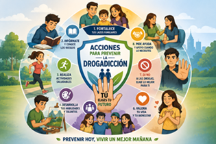

Ultimas noticias
Se conoce como adicción a las drogas, o drogadicción, al consumo frecuente de estupefacientes, a pesar de saber las consecuencias negativas que producen. Entre otras cosas, modifican el funcionamiento del cerebro y su estructura, provocando conductas peligrosas.
Se considera adicción, porque es difícil intentar dejar de consumirlas, ya que provocan alteraciones cerebrales en los mecanismos reguladores de la toma de decisiones y del control inhibitorio y porque el usuario de las mismas dedica gran parte de su tiempo en la búsqueda y consumo de ellas.
Adicción física, ocurre en los sitios del cerebro donde las neuronas crean la necesidad del consumo compulsivo, debido a que el cuerpo se ha acostumbrado a la droga.
Adicción psicológica, es la necesidad de consumo de una sustancia, que se manifiesta a nivel de pensamientos o emociones, ante una situación estresante, o algún problema. Por lo tanto no existe dependencia física, debido a que no se desarrollan receptores a nivel neuronal para la acción de la sustancia adictiva.

Hablar sobre drogas:
Los jóvenes necesitan toda la información necesaria sobre las drogas, provenientes principalmente de la familia, ya que esta debe ser su fuente de información confiable y segura, por lo cual, los padres deben informarse previamente en fuentes verídicas para educar a los hijos. Se recomienda abordar temas como las consecuencias físicas y psicológicas del uso de drogas, los factores de riesgo, las posibles situaciones que los puedan invitar a consumir, entre otras, así como abrir espacios seguros para el cuestionamiento propio del adolescente.
Estimular la responsabilidad:
Forjar un sistema de valores tanto en la familia como en la escuela, el sujeto podrá mantener un modelo de conducta a seguir y respetar a través de un sistema de creencias y límites saludables, que le permitan experimentar de forma segura y forjar su criterio propio, lo cual se transforma en conductas responsables. Los límites que se suelen recomendar son el establecimiento acerca de las consecuencias negativas que trae el uso de drogas durante la adolescencia y a cualquier edad.